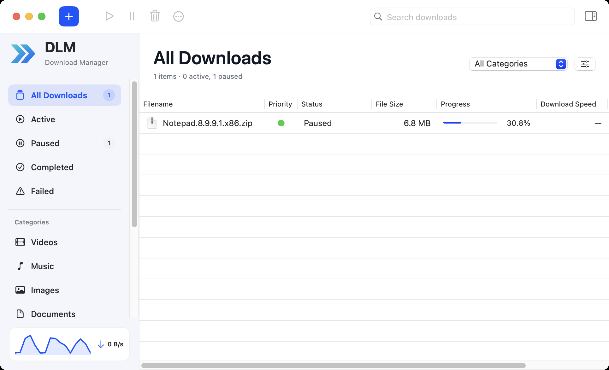

⇶
Set what matters first
Organize transfers into a queue and assign priorities, so important downloads get your attention first.
Keep every download in view and every decision in your hands. Pause and resume transfers, organize files, set priorities, and plan downloads—all in one native Mac app.

Organize transfers into a queue and assign priorities, so important downloads get your attention first.
Schedule transfers for a time that suits you, and manage your download activity from one clear workspace.
See progress and status at a glance. Pause a transfer and resume it when the server supports continuing downloads.
A native SwiftUI/AppKit interface powered by a Rust download engine. Available for macOS 13+ on Apple Silicon and Intel.
Free to download and use, with dedicated installers for Apple Silicon and Intel Macs. Requires macOS 13 or later.
This release is ad-hoc signed and is not notarized by Apple. macOS may block its first launch. After reviewing the app, you may be able to allow it under System Settings → Privacy & Security → Open Anyway. Do not disable Gatekeeper globally. Downloads run while DLM is open.
Apple's installation guidance ↗From categories and search to queue priorities, scheduling, and optional browser integration, DLM brings practical download tools together in a focused Mac experience.